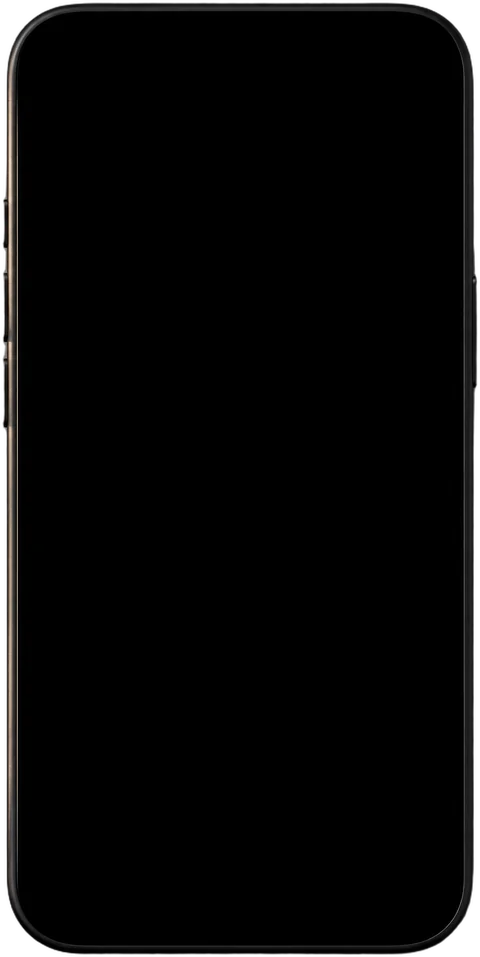
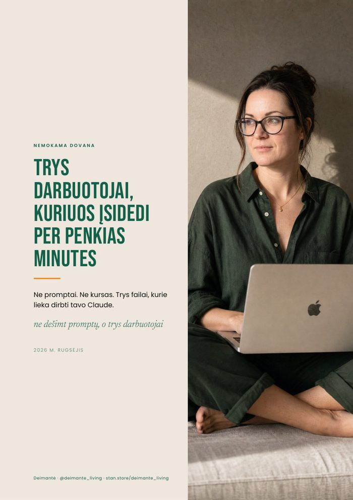
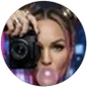
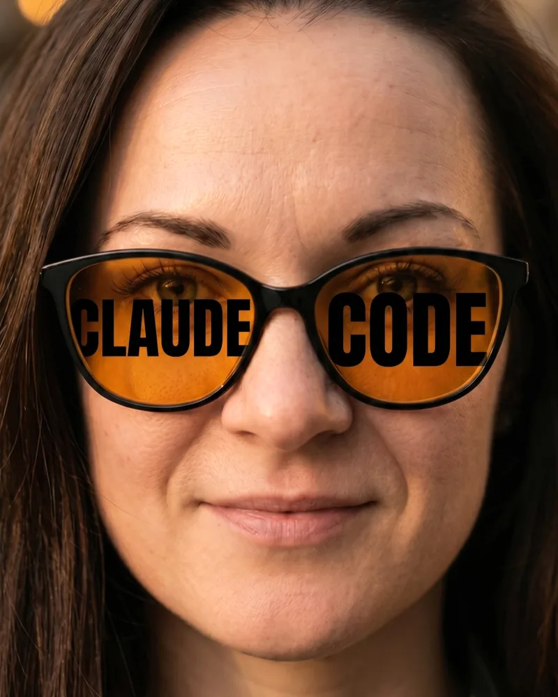

Reels montažas
Įmetu nufilmuotą video, o Claude Code sumontuoja: kirpimai, subtitrai, efektai, nuotraukos ir garsai. Viskas taip, kaip aš noriu.
Išbandyk efektusSusikurk savo AI komandą su Claude Code. Rutiną atiduodi jai, o kūryba lieka tau. Programuoti mokėti nereikia.


Claude Code~/mano-darbai


Šiandien
o aš geriu kavą


Turinio kūrėja, mokytoja ir vienintelė savo verslo darbuotoja.
Man nebereikia visko mokėti. Užtenka žinoti, ko noriu.
Kiekvienas robotukas yra vienas darbas, kurį atidaviau Claude Code. Paspausk bet kurį ir pažiūrėk, ką jis padarė.
Įmetu nufilmuotą video, o Claude Code sumontuoja: kirpimai, subtitrai, efektai, nuotraukos ir garsai. Viskas taip, kaip aš noriu.
Išbandyk efektusAprašau idėją, o skaidres su mano šriftais ir spalvomis sudeda Claude Code. Man lieka pasirinkti nuotrauką ir paskelbti.
Sąskaita faktūra
Serija DL Nr. 0146 · 2026-11-10
PardavėjaDeimantė, individuali veikla
PirkėjasUAB „Pavyzdys“
Individuali konsultacija150,00 €
Iš viso150,00 €
Sąskaita faktūra
Serija DL Nr. 0147 · 2026-11-11
PardavėjaDeimantė, individuali veikla
PirkėjasKlientė
Individuali konsultacija300,00 €
Iš viso300,00 €
Sąskaita faktūra
Serija DL Nr. 0148 · 2026-11-12
PardavėjaDeimantė, individuali veikla
PirkėjasKlientas
Individuali konsultacija150,00 €
Iš viso150,00 €
Programėlė iš Stan pardavimų failo išrašo sąskaitas PDF formatu ir veda jų žurnalą. Programėlę sukūrė Claude Code.
Parašai komentare GIDAS ir iškart gauni žinutę su nuoroda. Automatiką ManyChat programoje sustatė Claude Code.


21 puslapio gidas ir 9 puslapių dovana, sumaketuoti su mano nuotraukomis ir veikiančiais mygtukais.
Šio gėrimo nėra. Jį sugalvojo Claude Code, o video sukūrė prijungęs Higgsfield. Lygiai taip pat ir tu gali susikurti judančią reklamą savo produktui.
Šią svetainę irgi sukūrė Claude Code. Man tereikėjo pasakyti, ko noriu, ir nuspręsti, kas patinka.
Nufilmuoju video telefonu ir parašau, ko noriu. Claude Code iškerpa pauzes, uždeda subtitrus mano šriftu ir prideda efektų. Visi pavyzdžiai čia iškirpti iš mano tikrų reels, o viskas vyksta mano kompiuteryje, be kreditų.
Paspausk lapelį su prašymu.
Žurnalo viršelis
Paprastas montažas kasdieniams reels, montažas su efektais, o Mac kompiuteryje net pačioje Instagram Edits programoje. Viską rodau 13 modulyje, o savo montažo skilsą atiduodu 14 modulyje.
„Pasakai ir jis dirba.“
Tikros žinutės, kurias man parašė mokymų dalyviai. Perrašytos žodis į žodį, su jų pačių rašyba. Vardų nerašau, bet žmonės tikri.
Labas, Deimante! Kai tik Claude pradėjo skambėti iš visų IG, FB ir YouTube paskyrų, atrodė, kad čia jau raketų mokslas. 😄 Informacijos – kosmosas, panaudojimo būdų – N+K, bet turbūt niekada nepamiršiu vieno dalyko: mano įsitikinimas, kad co-work pakeis visą darbo dieną, buvo vienas klaidingiausių. 😂 O realiai – tik tavo dėka pagaliau supratau, kokia nežmoniška jėga slypi code ir ką su juo galima padaryti. Tu ne tik parodei įrankius – parodei, kaip mąstyti ir kur ieškoti galimybių. Iki šiol atrodo, kad po mokymų atsirado dar viena pora rankų ir dar viena galva. 🤯 Patys geriausi pinigai, kuriuos galėjau išleisti. Be jokios abejonės. ❤️ Jungčiausi į dar vieną kursą, tik sukurk jį!
Mokymų dalyvėClaude Code mokymai, žinutė
Ir tikrai, su juo bendrauji kaip su asistentu.. Man net baisu darosi... Pasakai ir jis dirba.. Aisku, vizija turi tureti, planą, matymą, standartus, bet vusa kita jis dėlioja, taiso, kai reikia kuria..
Mokymų dalyvėClaude Code mokymai, žinutė
Claude Code man kažkoks kosmosas, nerealus pagalbininkas!🥰 Anksčiau strigdavau toje pačioje vietoje: idėjų daugiau nei laiko, o kol vieną produktą pabaigdavau, kitos jau būdavo pasenusios. Per du su puse mėnesio su Claude Code padariau daugiau, nei anksčiau per pusmetį: Skool kursą, kelis PDF gidus, Instagram auditą ir strategiją. Karuselė anksčiau atimdavo pusdienį, dabar sugeneruoju per kelias minutes ir tik peržiūriu. Bet svarbiausia, kad nustojau kaskart pradėti nuo tuščio lapo. Jis žino mano toną, auditoriją, mano sprendimus, nereikia kaskart aiškinti iš pradžių. Juodraštį paruošia jis, bet sprendžiu aš. 😍 Nebeturiu jausmo, kad vejuosi savo pačios darbų sąrašą.☺️
Mokymų dalyvėClaude Code mokymai, žinutė
Cloud Code – kažkas nerealaus. 🤯 Atrodo, lyg būčiau programuotoja, nors tokia tikrai nesu. Dabar pati susikuriu tai, kam anksčiau net nebūčiau pagalvojusi, kad galiu. Labiausiai naudoju PDF failams kurti ir įvairiems smulkiems sprendimams. Tiek sutaupyto laiko, tiek naujų galimybių… Tikrai vieni naudingiausių mokymų, kuriuose esu dalyvavusi. ❤️
Mokymų dalyvėClaude Code mokymai, žinutė
norėjau pasakyti ačiū, įdarbinau cloude 😄 Tvarkausi nuotraukas ir video medžiaga kuri jau užpilde net kompiuteri, jis pats viska perkelia pagal folderius i kietąjį diską o aš kava geriu 😄🥳
Mokymų dalyvėClaude Code mokymai, žinutė
Ačiū, Deimante, už Claude code mokymus ir komunikaciją, kuri buvo operatyvi ir tikrai informatyvi🥰 Be Claude code jau neįsivaizduoju savo dienos😊 Tai mano pats geriausias asistentas, kuris ne tik padeda atlikti darbus, bet ir sutaupo nemažai laiko. Claude code man padeda kuriant prezentacijas, siunčiant laiškus, analizuojant duomenis, sisteminant info ir tvarkingai sudedant į failus. Esant poreikiui, info nusiunčia ten kur pageidauji. Jis ne tik daro dalykus, bet ir moko kaip pačiam bet ką, ką sugalvoji, pasidaryti❤️ Žodžiu esu laiminga, kad mokymus įsigijau ir taip palengvinau sau gyvenimą 💯👍
Mokymų dalyvėClaude Code mokymai, žinutė
Žodžiu greitai jis tai padarė.. Dar koreguosim aisku ir ne kartą, bet tas sudeliojimas susisteminimas vau
Aš taip greitai rankiniu būdu nebūčiau sudejus
Mokymų dalyvėClaude Code mokymai, žinutė
Nemėgdavau vektorizuoti, per Iliustrator tai darydavau, vakar šį mano vargą perleidau Code, kokias 7 min truko jis 😆 nuostabus įrankis. 💯 įšokau į traukinį manau laiku, bet suprantu, kiek daug dar ir nesugalvoju ką jam deleguoti, nes paprasčiausiai tom veiklom neužsiimu 🙃

Mokymų dalyvėClaude Code mokymai, žinutėLabai džiaugiuosi, kad vis gi nepradėjau pati ekspermentuoti - nes vis tiek reikia pagrindo ir žinių :) o mokymuose pas jus, labai gerai viskas išaiškinta.
Tad tikrai verta kiekvieno euro :) Ir rekomenduočiau.
Kadangi claudui turėjau labai daug darbo tai aš jį greit įdarbinau daug kam 😆 😊
Labai patinka realiai man čia bus kaip kolega :))
Mokymų dalyvėClaude Code mokymai, žinutė
Net dabar sedziu jau baigiu visas pamokas perskaityt ir atlikt veiksmus ir bandysiu jau karusele instagram sukurti :) bet auditus jau abieju savo paskyru pasidariau, zodziu kol kas man kosmosas cia kiek uz mus gali padaryt cloude code 🙈
Mokymų dalyvėClaude Code mokymai, žinutė
Ačiū, Deimante, už „Claude Code“ mokymus! 😊 Jau spėjau susikurti kelis įrankius savo kompiuteryje, kurie gerokai pagreitina kasdienius darbus – skolų valdymą, sąskaitų tvarkymą. Pasikūriau testų ir gidų. Dabar dar testuoju „Web“ ir „Meta Ads“ užduočių delegavimą. Labiausiai patiko tai, kad viską galima iškart pritaikyti praktiškai.🥰
Mokymų dalyvėClaude Code mokymai, žinutė
Man cloude code labai pagelbėjo kai norejau susikurti landing page. Viska padare jis aš tik sakiau noriu, kaip viskas turi atrodyti. Iš ties jis gali padaryti labai daug tik duok jam nurodymus. Rekomenduoju labai išmokti ji valdyti!
Mokymų dalyvėClaude Code mokymai, žinutė
Ir zinok taip dziaugiuosi, kad ta nakti kazkur pamaciau tavo pardavinejama gida, man vien is smalsumo buvo idomu pabandyt :) neitiketino idomumo ir galios irankis, mano auksti standartai vizualu, bet kai jau net juos padaro, esu labai happy. Noreciau tik daugiau laiko rast su juo padraugaut🫠🤩🫶
Mokymų dalyvėClaude Code mokymai, žinutė
Net nesinori kalbėti apie tai, ką Claude Code daro soc. tinkluose, Canvoje ar apie jo analizes, automatizacijas – tai jau tarsi savaime suprantama 😀😊 Bet labiausiai kas mane nustebino, kai Claude Code pats surado problemą, kodėl mano kompiuteris netikėtai persikraudavo vidury darbo dienos, nors jam vos metai. Tiesiog papasakojau, kas maždaug vyksta, o jis paprašė parašyti, kai tai pasikartos. Kai kompiuteris vėl persikrovė, parašiau jam, ir per penkias minutes jis rado priežastį – kažką operacinėje sistemoje, kas užmigdydavo sistemą ir sukeldavo persikrovimą. Pati tikrai nebūčiau to atradusi. Jau savaitė kompiuteris veikia be jokių trikčių. O buvau juk beveik nuvežusi jį pas meistrą, kas dar ir kainavę būtų. Claude Code viską sutvarkė ir kitą dieną net paklausė, ar kompiuteris daugiau nepersikrauna 😀
Mokymų dalyvėClaude Code mokymai, žinutė
Claude Code nuo nulio
Keturiolika modulių nuo pirmo paruošimo iki reels montažo. Ne teoriškai, o mano kompiuteryje, su mano darbais. Paspausk modulį ir pamatysi, ką po jo galėsi pasakyti Claude Code.
papasakok, ką gali padaryti už mane
Mokymuose rasi trijų rūšių medžiagą. Vaizdo pamokose viską rodau savo ekrane. Promptus gauni tekstu, tad juos tiesiog nusikopijuoji. O skilsai yra mano pačios darbo įrankiai: tie patys, su kuriais dirbu kasdien ir kurių mokau kitus.
Žiūri, kaip darau aš, ir pakartoji savo kompiuteryje. Prie bet kurios pamokos gali grįžti, kada nori.
Promptas6 modulis
Peržiūrėk mano Instagram paskyrą: profilio aprašymą, paskutinius 12 įrašų ir jų aprašymus. Pasakyk, kas veikia, o kas ne, ir pasiūlyk tris konkrečius pakeitimus šiai savaitei.
Nereikia perrašinėti iš video. Nusikopijuoji, įklijuoji į Claude Code ir pakeiti tik tai, kas apie tave.
--- name: mokytojas description: aiškink kaip mentorė, žingsnis po žingsnio, paprastai. --- # Kada naudoti - mokausi ką nors nauja - prašau paaiškinti, kaip veikia
Mano darbo būdai, sudėti į failus: reels montažas, mokymosi pagalbininkas, tekstų patikra. Įsidedi, ir Claude Code dirba taip, kaip dirbu aš.

Tavo antroji dešinioji ranka: Claude Code nuo nulio
Prisijungus gauni:
Dar neapsisprendei? Parsisiųsk nemokamą gidą
Taip. Programuoti mokėti nereikia. Mokymai lietuviškai ir pradedami nuo nulio, o su Claude Code kalbi paprastais žodžiais. Vienas atsiliepimas taip ir prasideda: „Aš tikrai nesuprantu programavimo, bet jau darau stebuklus!“
Claude Code veikia su mokama Claude prenumerata, ir užtenka pigiausio plano už 22 € per mėnesį. Ją moki tiesiai Claude, daugiau nieko pirkti nereikia. Higgsfield ir kiti AI vaizdo įrankiai yra papildomi, tik jei norėsi.
Taip, abiem. Dirbame Visual Studio Code programoje, kuri veikia ir Windows, ir Mac.
Rašai bendruomenėje bet kada ir sulauki atsakymo. Didesnius klausimus aptariame gyvai per Zoom. Prieiga prie mokymų lieka visam laikui, todėl gali grįžti prie bet kurio modulio.
Taip, tam skirtas visas 13 modulis. Claude Code iš tavo telefono video iškerpa pauzes, uždeda subtitrus tavo šriftu ir, jei nori, prideda efektų. Viskas vyksta tavo kompiuteryje, kreditų nereikia.
Susėdam ir žiūrim į tai, ką tu darai kasdien. Parodau, kaip Claude Code pritaikyti būtent tavo užduotims, žingsnis po žingsnio ir paprastais žodžiais.
Individuali konsultacija
150 €
už valandą
Užsiregistruoti ar paklausti gali taip, kaip tau patogiau. Atsakau visiems ir greitai.